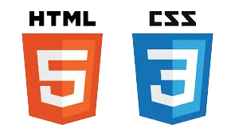
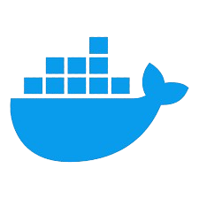

Contact
- 06.16.58.25.71
- l.beaute@laposte.net
- 3641 route de Puycelsi 81630 Montdurausse
- Mon LinkedIn
- Mon GitHub
- Portfolio (A venir)
Langues
- Français : natif
- Anglais : intermédiaire
Savoir-Être
- Curieux
- Minutieux
- Ambitieux
- Investi
Centres d'Intérêt
- Jeux mobile
- Échecs
- IA
- Musique (guitare)
- Permaculture
Profil
Passionné par l’informatique, je suis un développeur curieux, autonome et rigoureux. J’aime concevoir des solutions front et back efficaces, et apprendre de chaque projet. L’évolution constante du métier me motive chaque jour.
Front-End
- HTML/CSS
- JavaScript
 Figma
Figma
Back-End
- PHP
- Symfony
 MySQL
MySQL
Autres
- GitHub
- Docker
- Linux
Savoir-Faire
- Capacité à apprendre
- Gestion des priorités
- Maîtrise des ERP
- Lecture de documentation officielle
Projets
-
Application météo (JS) :
-JavaScript animation d'apparition et suppression d'élement.
-Gestion stockage avec LocalStorage. -
Discographie (PHP/MYSQL/JS) :
-Base donnée MYSQL, implémentation complète du CRUD.
-Formulaire création compte utilisateur, controle de formulaire pour validation et hash du password.
-Création input de recherche avec affichage dynamique. - Formulaire de paiement (PHP/JS + Stripe) :
-Création de formulaire de paiment.
-Gestion de transation avec Stripe.
-Controle du formulaire.
-Création de boite modale. - Application equipement management pour jeu mobile (JS + JSON + PHP + MYSQL) -En cours -
- Jeu d'echecs (JS/PHP) - En cours -
Expériences Pro Post Reconversion
- Auriol Frappe à Froid - Magasinier (2018–2024)
- Lagrange Production - Cariste (2018)
- Missions intérim diverses (2012–2017)
Formation
- Formapedia - Dev Web (05/2025–02/2026)
- Promotrans Toulouse - Préparateur commandes (2017)
- LEPA Moissac - Bac pro paysagiste (2009–2012)